Introduction
The ProcessMaker Enterprise Edition offers additional functionality designed for demanding enterprise users. If successfully deploying the ProcessMaker Community Edition, then rest assured that the Enterprise Edition will also serve your needs, since it is built on the same open source core used by the Community Edition.
It adds a series of proprietary plugins and 16 Enterprise features. Like the open source core, all the source code for the Enterprise Edition plugins can be viewed, however the "shared source" license does not allow the plugin code to changed or redistributed.
The ProcessMaker Enterprise Edition offers the following features:
- Allows users with the PM_SETUP_ADVANCE permission in their role to access information about the plugins and features and configure them.
- Provides a user-friendly interface to Install, Upgrade or even Buy plug-ins.
- Includes the option to import a license using the Enterprise Manager interface or install plug-ins separately.
- Automatically checks for updates for plug-ins and features.
- Provides an option to generate a file with detailed information about the system, such as: license, enabled plugins, system time zone, etc.
Requirements
- An Enterprise Edition license, based on your subscription.
- ProcessMaker Enterprise Edition v. 3.1.
Installing the Enterprise Edition
Once ProcessMaker Enterprise Edition 3.1 is installed on your server, a new screen will display to enter the license:
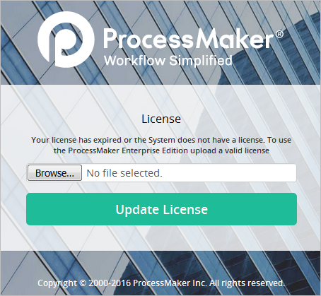
Click on "Browse" and select the .dat license file which was purchased from the ProcessMaker Sales Department. Then, click the "Update License" button.
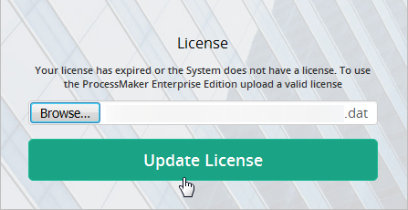
If the license is valid, the following message will display:
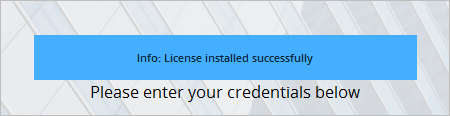
Enterprise Manager
Once logged in, go to ADMIN > Plugins and the "Enterprise Manager" option will be available:

Click on this option and a panel on the right-hand side of the screen will be displayed:
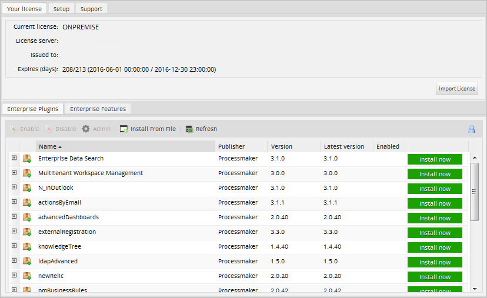
This section is divided into 5 sections:
Your License - Importing and checking information
To change the license or review the information, go to ADMIN > Plugins > Enterprise Manager and select the Your License tab:
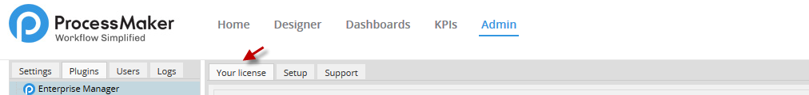
Checking Information
Once the license has been imported after the installation, the "Your License" tab shows information about the license:

- Current License: Shows the current license that is installed on the server.
- License Server: Shows the server where the license is installed.
- Issued to: Shows for whom the license was generated.
- Expires (days): Shows the limit time of the license. The first number shows how many days are left until the license expires and the second number displays the total time of the license in days. The start and end date of the license is displayed in parentheses.
Importing a license
In case of having your license expired, please renew it by contacting the ProcessMaker Sales Department.
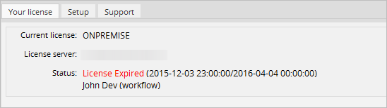
Otherwise, when entering this license the following message will display:
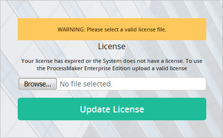
When the license is about to expire, a red message is displayed at the top-right corner of the ProcessMaker interface. This message can be seen only by Administrator users.
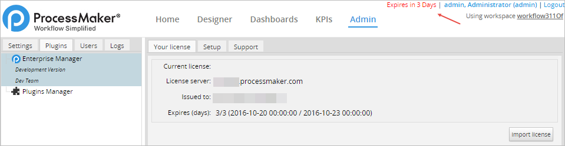
To import a new license click on Import License
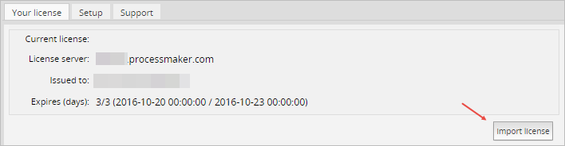
Upload the new .dat license file in the dialog displayed:
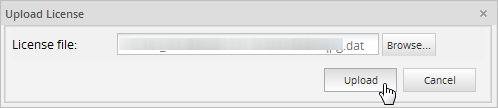
Click on Upload to import the license file. ProcessMaker will automatically refresh in order to apply changes.
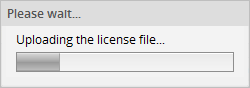
Setup - Checking for updates
ProcessMaker can be configured to automatically check for updated versions of plugins and features as they become available. To enable this option, go to ADMIN > Plugins > Enterprise Manager > Setup and mark the Check for updates option. Remember that the ProcessMaker server must have an internet connection in order to check for updates.

Click on Save in order to save the configuration.
Notice that when there is no internet connection as well as when this option is not checked, the list of plugins will not be updated and only those plugins that are installed locally and over which the user can perform administrative tasks will be displayed.
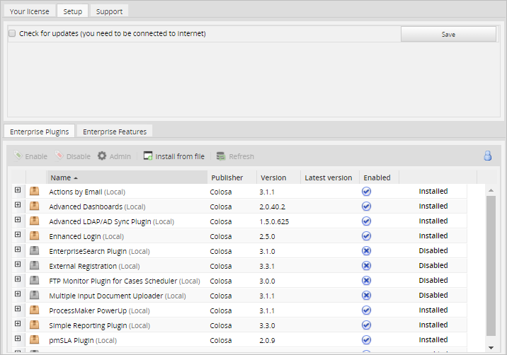
A new installation doesn't have plugins installed by default. When there is no internet connection, the list of plugins will be blank, because the license cannot be read and therefore the list of plugins cannot be updated.
Support - Getting information about the system
The Enterprise Manager provides an option to generate a file providing information about your system, which can be sent to the ProcessMaker Support Team in order to check for issues related to the license, plugins and/or features. To create this file, go to ADMIN > Plugins > Enterprise Manager > Support and click on the Generate button to download the file to your computer.

Inside the file, information is listed about:
- License
- User information
- Workspace name
- Plugins and features
Note: The data in this file is serialized, so it isn't easy to read without unserializing it.
Enterprise Plugins - Listing Available Plugins
To see a list of all the available plugins, go to ADMIN > Plugins > Enterprise Manager > Enterprise Plugins. The name, publisher, installed version, most recent version and status of each plugin will be displayed.

To see a description of an specific plugin, click on its expander or double click the plugin's name on the list.
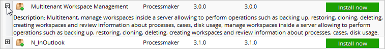
Each plugin has a different action depending on its status:
-
 The plugin is not installed. Click on this option to install it. Once it is installed, its status will change to Installed.
The plugin is not installed. Click on this option to install it. Once it is installed, its status will change to Installed. -
 The latest version of the plugin is installed on the server.
The latest version of the plugin is installed on the server. - The license does not allow the plugin to be installed. Click on this option to send a request to the ProcessMaker Sales Department to buy the plugin.
- An older version of the plugin is installed, but a more recent version is now available. Click this option to download and install the most recent version of the plugin.
Note: If a plugin is in Beta phase, it will be listed in parentheses. If using ProcessMaker in production, it is recommended to wait until the plugin is released as stable before installing it.
Enterprise Plugins
Above the list of plugins, a bar of buttons provides the following options:

- Enable: To enable a plugin, first it must be installed, then select it and click on Enable. The status of the plugin will change to Installed and its folder icon will change color.
- Disable: To disable a plugin, select it in the list and click on Disable. The status of the plugin will change to Disabled and its folder icon will change color.
- Admin: Some plugins provide extra configuration options. Select the plugin in the list and then click on Admin to configure it. This option can only be used when the status of the plugin is Installed or Upgrade Now.
- Install From File: Click this option to install a plugin from a file, rather than downloading the plugin from the internet.
- Refresh: This option refreshes the list of available plugins and their status.
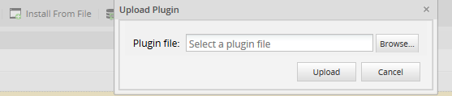
Enterprise Features List
Features are options which are included in the code for the Enterprise Edition so they do not need to be downloaded and installed like a plugin, however their use depends upon the license. Version 3.1 offers new features, which will be automatically enabled if the license permits their use. Moreover the Actions by Email and Batch Routing plugins are embedded in the interface, they won't need to be enabled separately.
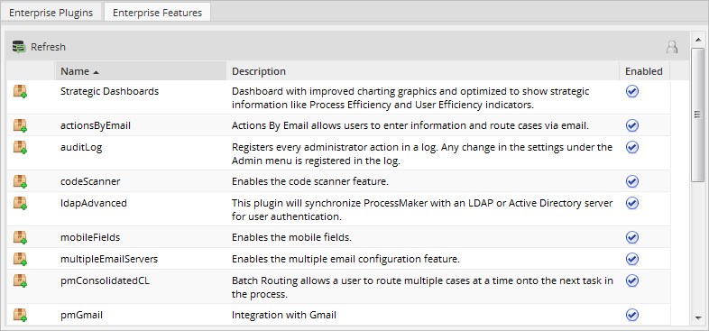
For more information about these features, see the ProcessMaker Enterprise Edition page or each feature documentation:
- Strategic Dashboards
- Actions by Email
- Audit Log
- Code Scanner
- ldapAdvanced
- Mobile Fields
- Multiple SendMail Addresses and Servers
- Batch Routing
- Double Database Connection
- Secure User Password Hash
- Promotion Manager
- Send Email from different email server
- User-Based Language Settings Management
- User-Based Time Zone Management
- WindowsSSO